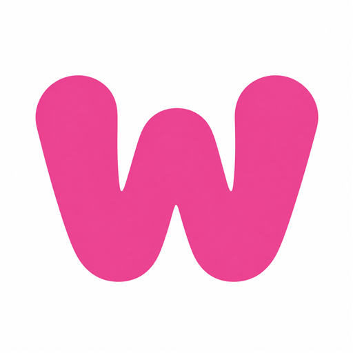
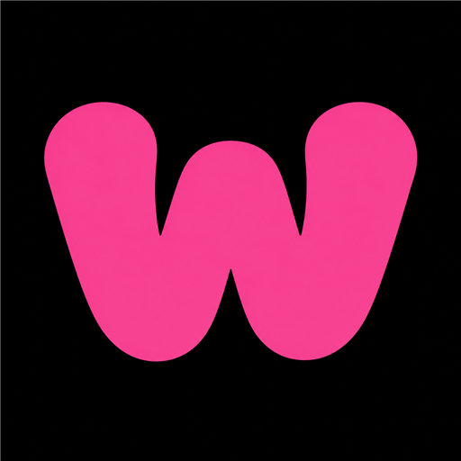
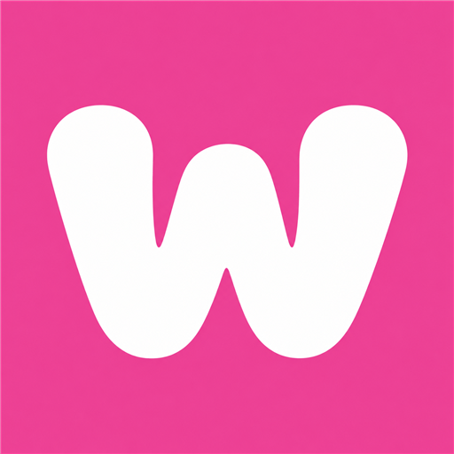
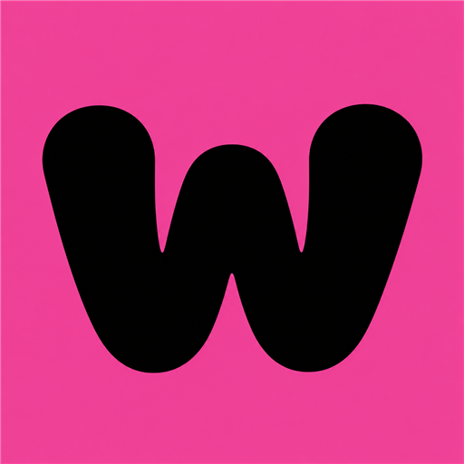

Eine freundliche Wortmarke mit Charakter. Mahagoni und Babyblau gestalten die Elemente. Pink bleibt dem Logo und gezielten Hervorhebungen vorbehalten.
Mahagoni und Babyblau sind die Grundfarben für Elemente. Blush und Ice Blue setzen gezielte Akzente. Pink ist primär für das Logo und besondere Hervorhebungen wie den wichtigsten CTA vorgesehen.
#EC4899
Logo & gezielte CTAs
#420D09
Elemente · dunkle Variante
#89CFF0
Elemente · helle Variante
#FCE7F3
Akzentfarbe 1
#E7F5FC
Akzentfarbe 2
Ice Blue: Babyblau mit rund 80 % Weiss – ähnlich zart wie Blush. Mahagoni aus deiner HEX-Vorlage; Babyblau direkt aus dem Bild ausgelesen.
Funktionsfarben: Warmweiss #F8F7F4 · Weiss #FFFFFF · Ink #1D1D1F · Linien #E7E5E4 · Button-Pink #DB2777. Diese zählen nicht zu den fünf Markenfarben. Die Original-PNG bleibt unverändert.
Dein nächsterSalonbesuch.
Die klare Begleitschrift gibt der runden Wortmarke einen ruhigen Rahmen.
Titel 600–700 · Text 400–500Hier lokal mit Arial als Fallback, falls Geist nicht installiert ist.
Entdecke etwas Neues.
Finde Salons in deiner Nähe und erfahre mehr über ihr Angebot.
Beispielgestaltung · 8-px-Abstandsraster · Karten / Dialoge 24 px · Buttons / Felder / Bilder 16 px · Chips rund
Die freigestellte Version liegt als PNG mit echtem Alphakanal vor, 1774 × 887 px. Es ist keine Vektordatei.
Einfarbige und skalierbare Ausgaben sowie ein App-Icon benötigen eine separate Reinzeichnung. Keine zusätzlichen Effekte oder Veränderungen der Bögen.
Lust aufeinen neuenLook?
Entdecke Salons in deiner Nähe.
Social-Media-Motiv
Entdecke unseren Salonauf Walkinly.
Aushang · Gestaltungsbeispiel
«Entdecke Salons in deiner Nähe.»
Wir duzen, schreiben kurze Sätze und verwenden Schweizer Rechtschreibung. Verfügbarkeit und Wartezeiten nennen wir nur, wenn aktuelle Daten vorliegen.
Vier Farbvarianten mit bewusst deckender Icon-Fläche. PNG in 16, 32, 48, 180, 192 und 512 px; ICO in 16, 32 und 48 px.

pink-on-white

pink-on-black

white-on-pink

black-on-pink